|
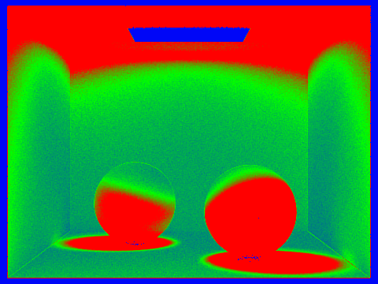 |
Overview
This project implements a full Monte Carlo path tracer, exploring the rendering pipeline from camera ray generation to global illumination and adaptive sampling.
We start by generating camera rays from normalized image coordinates, mapping each pixel into 3D camera space, and transforming rays into world space. To accelerate intersection tests in complex scenes, we implemented a bounding volume hierarchy (BVH), which organizes primitives into a tree structure. We also implemented direct and global illumination and improved convergence with importance sampling and adaptive sampling.
The most important implementation challenges were balancing BVH split quality versus build stability (handling degenerate centroid partitions) and debugging variance in indirect-lighting estimates. We addressed those issues by adding robust BVH fallback splits, validating recursion-depth logic for bounce isolation, and checking convergence behavior with sample-rate visualizations.
Part 1: Ray Generation and Scene Intersection (20 Points)
Walk through the ray generation and primitive intersection parts of the rendering pipeline.
Task1: Generating Camera Rays
In this part, we implemented generate_ray() to map 2D image space coordinates into 3D camera rays.
We begin by transforming normalized image coordinates (x,y)∈[0,1]into camera sensor space. Since the sensor spans [−tan(hFov/2), tan(hFov/2)] horizontally and [−tan(vFov/2), tan(vFov/2)] vertically, we first remap the coordinates from [0,1] to [−1,1], and then scale by the field of view:
sensor_x = (2x−1)⋅tan(hFov/2)
sensor_y = (2y−1)⋅tan(vFov/2)
This produces a point on the image plane in camera space. We then construct a ray originating at the camera origin (0,0,0) and passing through (sensor_x, sensor_y, −1).
Next, the ray is transformed into world space using the camera-to-world transformation matrix (c2w). The resulting direction vector is normalized to ensure consistent intersection behavior. Finally, the ray origin is set to the camera position, and its bounds [mint, maxt] are initialized using the near and far clipping planes.
Task 2: Generating Pixel Samples
For task2, to estimate pixel radiance, we implemented Monte Carlo sampling by tracing multiple rays per pixel. For each pixel (x,y), we generate subpixel samples using Vector2D sample = origin + gridSampler->get_sample().
We then normalize these coordinates to [0,1]:
sx=sample.xwidth
sy=sample.yheight
Instead of casting a single ray through the pixel center, this approach distributes samples across the pixel area, reducing aliasing and better approximating continuous radiance. Each sample is used to generate a camera ray via generate_ray(), and its radiance is computed using est_radiance_global_illumination(). We accumulate contributions across all samples and compute the final pixel color by averaging. This averaging step approximates the integral of incoming radiance over the pixel area.
Explain the triangle intersection algorithm you implemented in your own words.
Task 3: Ray-Triangle Intersection
We implemented ray–triangle intersection using the Möller–Trumbore algorithm, which solves for intersections using barycentric coordinates.
Given triangle vertices p1, p2, p3 , we define edge vectors: e1 = p2−p1, e2 = p3−p1 . Then we compute intermediate vectors: s = r.o − p1 (vector from the triangle vertex to the ray origin), s1 = r.d × e2 ,( the cross product between the ray direction and edge e2), and s2 = s × e1 (another cross product used to compute barycentric coordinates). s1 and e1 to determines whether the ray is parallel to the triangle. If the determinant is very close to zero, the ray does not intersect the triangle plane, and we immediately return false.
If the determinant is valid, we proceed by computing its barycentric coordinates using t (the distance along the ray where the intersection occurs), b1, b2 (barycentric coordinates of the intersection point). We can define the third barycentric coordinate by b0=1−b1−b2 .
We used these barycentric coordinates to determine whether the intersection lies outside the triangle by checking if any of b0,b1,b2 < 0 . We also ensure that the intersection lies within the valid ray interval by checking if t∈[min_t,max_t] .
In intersect() , we additionally store:
Task 4: Ray-Sphere Intersection
We also implemented ray–sphere intersection using the quadratic equation derived from substituting the ray equation into the sphere equation. Let oc = r.o−o, where o is the sphere center. This gives a quadratic at^2+bt+c = 0.
We compute the discriminant disc = b2−4ac. If disc < 0, there are no real solutions, meaning the ray misses the sphere and if disc >= 0, the ray intersects the sphere at one or two points.
When intersections exist, we compute t1 = (−b−disc) / 2*a, t2 = (−b+disc) /2*a
We select the smallest valid t ∈ [mint,maxt]. In has_intersection(), we only check validity and update ray.max_t.
In intersect(), we additionally record:
- intersection distance t
- surface normal (computed analytically as the normalized vector from the center to the hit point)
- primitive pointer
- BSDF
Show images with normal shading for a few small .dae files.
|
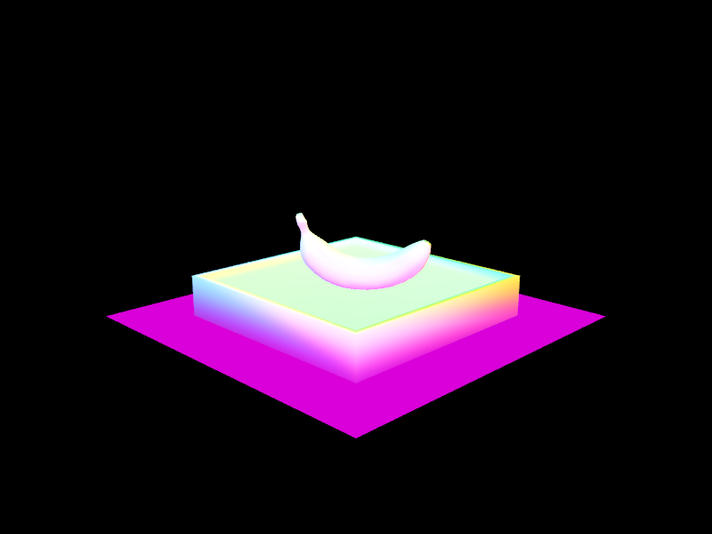 |
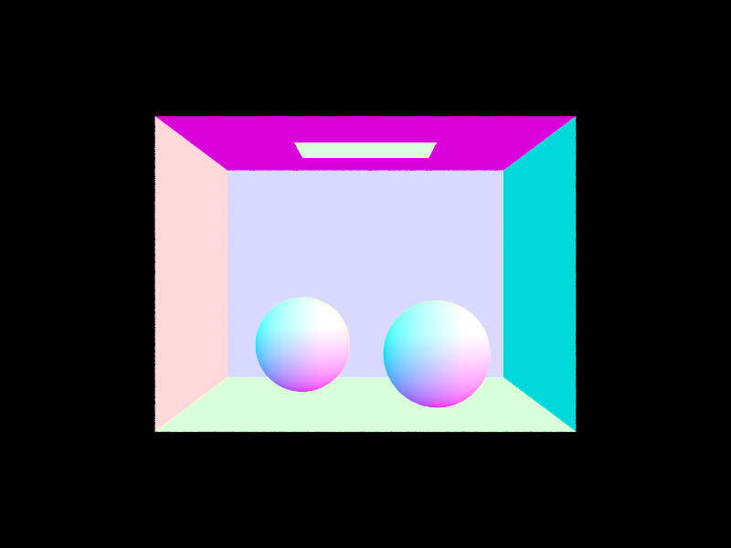 |
Part 2: Bounding Volume Hierarchy (17 Points)
Walk through your BVH construction algorithm. Explain the heuristic you chose for picking the splitting point.
Our BVH is built with a binary tree, where each node is a bounding box that encloses a subset of
primitives in that subtree. We recursively construct the tree:
1) Compute the node bounding box by unioning all primitive boxes in the current range.
2) If the primitive count is at most max_leaf_size, stop and mark this node as a leaf.
3) Otherwise choose a split axis and split position, partition primitives by centroid,
then recurse on the left and right partitions.
Our default split heuristic is centroid midpoint on the longest axis:
we choose the axis with largest node extent, then split at the midpoint of that extent.
This usually reduces overlap and balances traversal depth for general scenes.
If a partitioning places all primitives on one side, we force a median-by-count split
to avoid infinite recursion and keep the tree well-formed.
For extra credit, we also implemented an optional SAH binned split (see Part 6 for more details):
1) for each axis, we bin centroids (8 bins), evaluate candidate split costs using
$$C \propto A_L N_L + A_R N_R,$$
2) pick the minimum-cost split.
3) If SAH is degenerate (e.g., empty partition or tiny extent), fall back to midpoint splitting.
Show images with normal shading for a few large .dae files that you can only render with BVH acceleration.
|
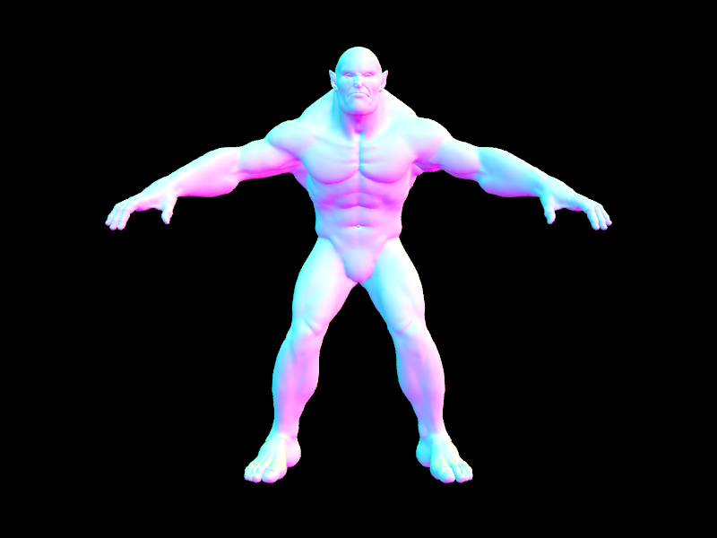 |
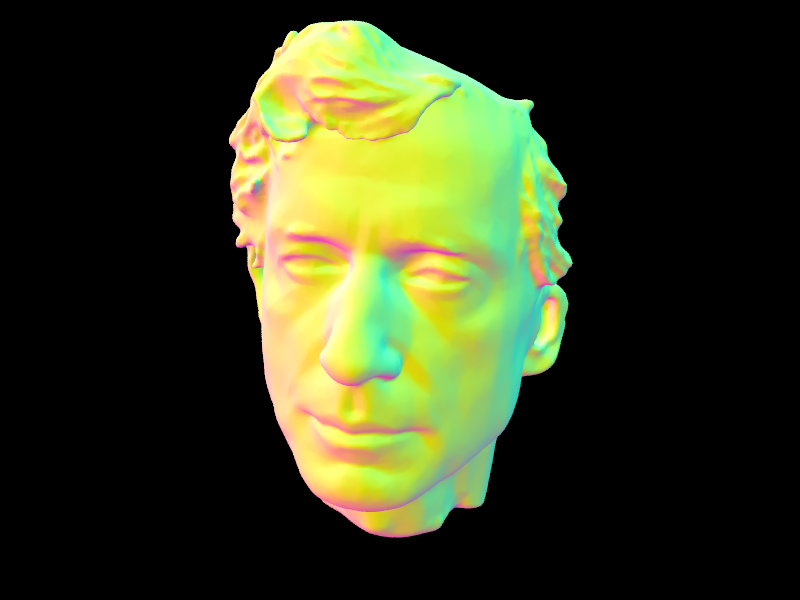 |
These large scenes were used specifically because brute-force primitive intersection is impractically slow without acceleration; with BVH enabled, both become interactively renderable at assignment settings.
Compare rendering times on a few scenes with moderately complex geometries with and without BVH acceleration. Present your results in a one-paragraph analysis.
|
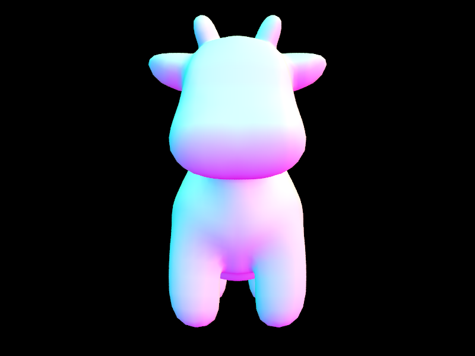 |
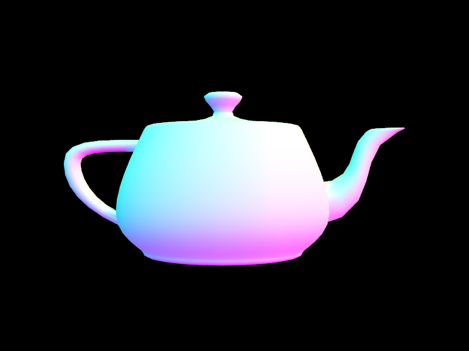 |
| Scene | Without BVH | With BVH | Speedup |
|---|---|---|---|
| cow.dae | 113.09s | 0.77s | 146.6× |
| teapot.dae | 34.27s | 0.73s | 46.9× |
The BVH significantly sped up rendering times! For the cow model, rendering dropped from 113.09 seconds without BVH to 0.77 seconds with BVH (146.6× speedup!). Similarly, the teapot model renders in 34.27 seconds without acceleration but only 0.73 seconds with BVH (46.9× speedup!). This comes from the BVH allowing each ray to prune large sections of the scene through binary search, skipping objects outside of the non-intersected bounding boxes, and reducing the number of ray intersection tests!
Part 3: Direct Illumination (20 Points)
Walk through both implementations of the direct lighting function.
Direct illumination is computed using two sampling strategies:
1) Uniform Hemisphere Sampling: We sample directions uniformly over the hemisphere above the hit point, cast shadow rays, and accumulate contributions weighted by the BSDF and cosine term, divided by the uniform PDF ($1 / 2\pi$). This method is straightforward, but many samples are wasted on directions that do not point toward a light source.
2) Light Importance Sampling: We sample directions directly from the light sources. Area lights are sampled multiple times per shading point (using ns_area_light), while point lights require only one sample. Each contribution is visibility-checked with a shadow ray and weighted by the light-sampling PDF. Because samples are focused on high-contribution directions, this approach produces lower variance.
The key difference is where samples are spent: hemisphere sampling spreads effort uniformly, while importance sampling targets directions that are more likely to contribute illumination. As a result, importance sampling converges faster for the same sample budget.
Show some images rendered with both implementations of the direct lighting function.
| Uniform Hemisphere Sampling | Light Sampling |
|---|---|
|
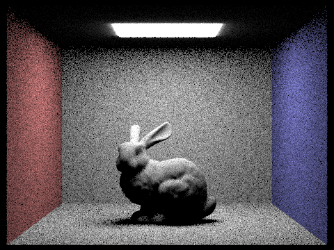 |
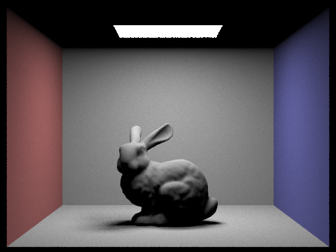 |
|
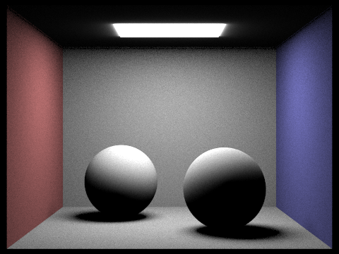 |
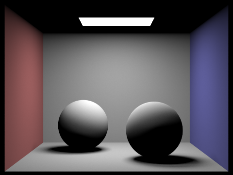 |
Focus on one particular scene with at least one area light and compare the noise levels in soft shadows when rendering with 1, 4, 16, and 64 light rays (the -l flag) and with 1 sample per pixel (the -s flag) using light sampling, not uniform hemisphere sampling.
|
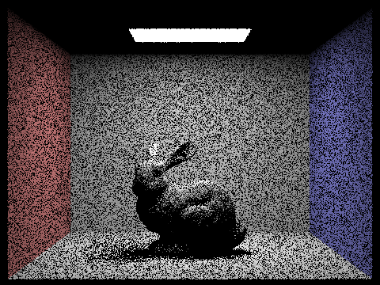 |
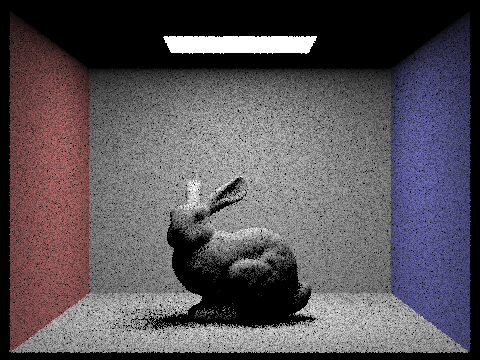 |
|
|
|
As the number of light rays increases from 1 to 64, soft-shadow noise decreases consistently.
With 1 sample per pixel and 1 light ray, the bunny's shadow is visibly noisy and low-contrast details are hard to distinguish. At $l = 1$,
each shading point relies on a single area-light sample, so radiance varies significantly from pixel to pixel.
At 4 light rays, the shadow pattern is already smoother. At 16 rays, soft-shadow boundaries are much more stable with substantially less
noise. At 64 rays, the noise is minimal and transitions look clean and continuous.
This matches Monte Carlo behavior: variance decreases approximately as $O(1/\sqrt{N})$, where $N$ is the number of samples. The improvement
is most visible in the ground-shadow region, where overlapping soft shadows become clearer as sampling increases.
Compare the results between uniform hemisphere sampling and lighting sampling in a one-paragraph analysis.
Light importance sampling clearly outperforms uniform hemisphere sampling in both quality and efficiency.
Hemisphere sampling distributes rays over all directions, so many samples land in directions with little or no contribution. In contrast,
light sampling concentrates rays toward actual emitters, which provides cleaner estimates for the same computational budget.
Visually, the difference is most noticeable in soft shadows: light sampling yields smoother and better-defined shadow boundaries, while
hemisphere sampling remains noisy at comparable settings.
Hemisphere sampling also tends to produce a stronger "glow" near the light source. Since directions are sampled uniformly, occasional direct
hits to bright emitters can introduce large local variance. Importance sampling reduces this effect by sampling from the light distribution
and correctly weighting contributions by the sampling PDF.
In practice, light sampling converges faster and achieves cleaner direct-illumination results with fewer samples.
Part 4: Global Illumination (25 Points)
Walk through your implementation of the indirect lighting function.
For at_least_one_bounce_radiance, we first add one-bounce direct lighting
(one_bounce_radiance) at the current hit point, then recursively sample a BSDF direction to estimate higher-order bounces.
To reduce computation, we apply Russian roulette termination with probability $p = 0.35$, and to keep the estimator unbiased,
surviving paths are divided by the continuation probability:
$$
L_{indirect} \leftarrow
\frac{f_r(\omega_o,\omega_i)\,\cos\theta_i}{p(\omega_i)\,p_{cont}}\,L_o(x',-\omega_i),
\quad p_{cont}=1-0.35.
$$
Specifically, we implementated the indirect lighting method as follows:
1) Always add one-bounce direct light at each hit.
2) Stop recursion when depth reaches 1.
3) Sample a BSDF direction, spawn the next ray with epsilon offset, and recurse on hit.
4) Accumulate either all bounces (isAccumBounces) or isolate a specific bounce depth.
Show some images rendered with global (direct and indirect) illumination. Use 1024 samples per pixel.
|
|
|
|
Pick one scene and compare rendered views first with only direct illumination, then only indirect illumination. Use 1024 samples per pixel.
|
|
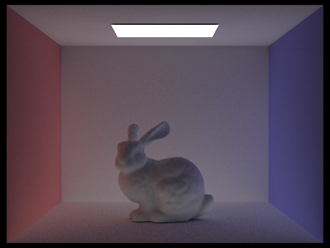 |
Total radiance at each intersection point is calculated recursively:
$$L_o = L_0 + L_1 + L_2 + \cdots$$
where $L_0$ are the zero-bounce emissions, $L_1$ is direct lighting, and $L_{\ge2}$ are indirect bounces.
Direct illumination contains light that reaches the surface from emitters and then travels to the camera in one bounce.
Indirect illumination contains light that has already bounced off other surfaces, carrying color bleeding and global transport effects.
We saw that the direct-only images showed stronger shadows from the overhead light, with no color bleeding from the side
walls. The indirect-only image shows visible red/blue wall tinting on the bunny, but lacks the physically expected direct shadowing from
the light source.
For direct-only illumination, we modified PathTracer::at_least_one_bounce_radiance to return zero additional
contribution, because PathTracer::est_radiance_global_illumination already adds zero-bounce and one-bounce terms:
return Vector3D(0, 0, 0);For indirect-only illumination, we removed the top-level direct terms by subtracting zero-bounce and one-bounce contributions at the first recursion level:
if (r.depth == max_ray_depth) {
return L_out - 2.0 * one_bounce_radiance(r, isect) - zero_bounce_radiance(r, isect);
}
For CBbunny.dae, render the mth bounce of light with max_ray_depth set to 0, 1, 2, 3, 4, and 5 (the -m flag), and isAccumBounces=false. Use 1024 samples per pixel.
|
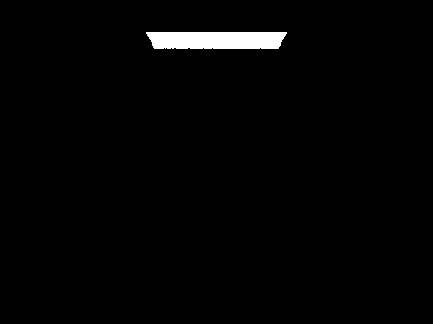 |
|
|
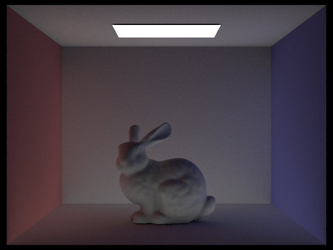 |
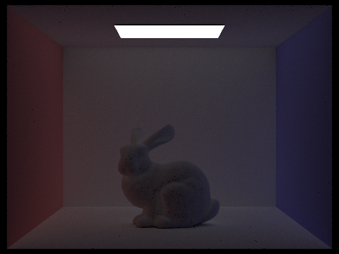 |
|
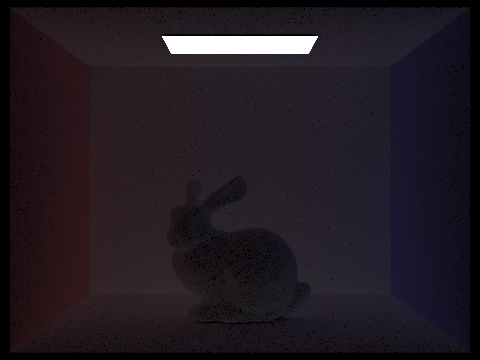 |
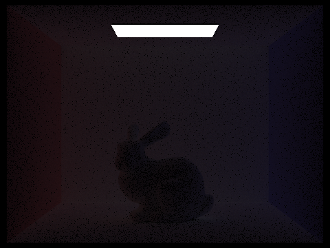 |
Explain in your write-up what you see for the 2nd and 3rd bounce of light, and how it contributes to the quality of the rendered image compared to rasterization. Use 1024 samples per pixel.
The 2nd and 3rd bounces are the most visually important for realism, since they create global illumination effects
(color bleeding and soft indirect fill) that rasterization with direct lighting can't reproduce. However, with each
additional bounce, the contributions become less significant.
With isAccumBounces=false, each image isolates one specific bounce order.
Increasing max_ray_depth changes which bounce is visualized:
m = 0: zero-bounce/emissive contribution only; most surfaces are dark.
m = 1: direct lighting appears first, with sharp visibility from the emitter.
m = 2: first true indirect bounce introduces noticeable color bleeding from Cornell-box walls and softens dark regions.
m = 3: second indirect transfer strengthens interreflection in creases and contact regions and stabilizes low-frequency shading.
m = 4, 5: higher-order contributions are present but much weaker, mainly subtle smooth brightening.
Compare rendered views of accumulated and unaccumulated bounces for CBbunny.dae with max_ray_depth set to 0, 1, 2, 3, 4, and 5 (the -m flag). Use 1024 samples per pixel.
| Depth | Unaccumulated (-o 0) |
Accumulated (-o 1) |
|---|---|---|
| m = 0 | 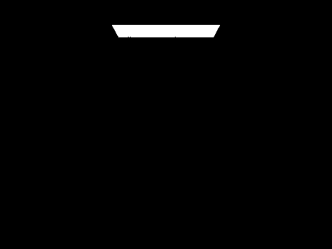 |
|
| m = 1 | ||
| m = 2 | 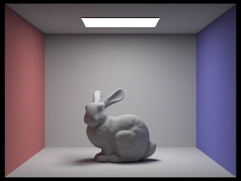 |
|
| m = 3 | ||
| m = 4 | ||
| m = 5 |
In unaccumulated mode, each image isolates exactly one bounce order, which lets us see where each portion of the illumination comes from. In accumulated mode, the lower-order bounces are accumulated for each depth, and so the image appears progressively more complete. We see that visually, most perceptual improvement occurs by depth 3, while depth 4 and 5 only provide subtle refinements in darker regions.
For CBbunny.dae, output the Russian Roulette rendering with max_ray_depth set to 0, 1, 2, 3, 4, and 100 (the -m flag). Use 1024 samples per pixel.

|

|
|

|
|
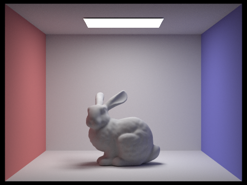 |
Russian Roulette attempts to speed up ray tracing by probabilistically terminates long paths, while preserving an
unbiased estimator by weighting each contribution. So, increasing m yields the same effect as before,
and we are now able to compute m = 100 in a reasonable time! As expected, m = 100 image
is visually close to low-depth renders, validating our intuition that ray tracing converges quickly, because high-order
bounces contribute very little radiance.
Pick one scene and compare rendered views with various sample-per-pixel rates, including at least 1, 2, 4, 8, 16, 64, and 1024. Use 4 light rays.
|
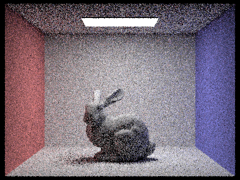 |
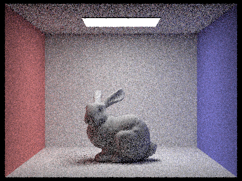 |
|
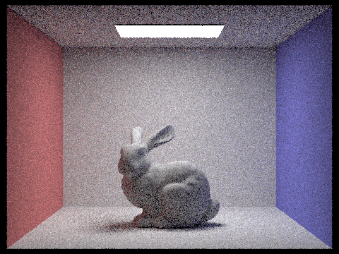 |
|
|
|
|
|
|
We rendered CBbunny at 1, 2, 4, 8, 16, 64, and 1024 spp (with 4 light samples).
As spp increases, noise drops and shading becomes progressively smoother.
We also implemented light sampling with Monte Carlo integration, which estimates the lighting integral by
averaging weighted random samples! In radiometric terms, our renderer estimates radiance at the camera.
For $N$ samples $x_i \sim p(x)$, the estimator is the average, of a weighted sum, of N samples:
$$
I = \int_{\Omega} f(x)\,dx
\approx \hat I_N = \frac{1}{N}\sum_{i=1}^{N}\frac{f(x_i)}{p(x_i)}.
$$
If $Y_i$ is the per-sample radiance contribution and
$\mathrm{Var}[Y_i] = \sigma^2$, then:
$$
\mathrm{Var}[\hat I_N]
= \mathrm{Var}\!\left[\frac{1}{N}\sum_{i=1}^N Y_i\right]
= \frac{1}{N^2}\sum_{i=1}^N \mathrm{Var}[Y_i]
= \frac{\sigma^2}{N}.
$$
Therefore, our estimation is garranteed to converge! In practice, since the standard deviation scales as $1/\sqrt{N}$,
a 4x increase in spp gives about a 2x reduction in visible noise.
At low spp (1-8), high variance appears as speckle in shadowed and indirectly lit regions.
At medium spp (16-64), shadow boundaries stabilize and diffuse gradients are cleaner.
At 1024 spp, remaining variance is minimal, giving near noise-free soft shadows and smoother color transitions.
Thus, we get a predictable quality-time tradeoff: early spp increases give large visual gains,
while later increases provide finer improvements at higher cost.
Part 5: Adaptive Sampling (15 Points)
Explain adaptive sampling. Walk through your implementation of the adaptive sampling.
For this part, we implemented adaptive sampling to efficiently reduce noise in Monte Carlo path tracing by allocating more samples to pixels that need them and fewer to pixels that have already converged.
We begin by tracing rays through each pixel and accumulating the radiance samples Li and their illuminance xi=Li.illum() . For each pixel, we maintain running sums of the illuminance where n is the number of samples taken so far. From these, we compute the mean and variance.
Next, we calculate a 95% confidence interval for the pixel’s illuminance by I=1.96σn .
This interval measures how close our current estimate of the pixel’s average illuminance is to the true value. If I≤maxTolerance⋅μ , we assume the pixel has converged and stop tracing additional rays. Otherwise, we continue tracing up to the maximum number of samples (ns_aa) .
To reduce computational overhead, convergence is only checked every samplesPerBatch samples instead of after every ray.
After convergence, the final pixel radiance is computed as the average of all accumulated samples, and the number of samples actually taken is stored in sampleCountBuffer . This allows us to generate a sampling rate image that visualizes which pixels required more or fewer samples.
Pick two scenes and render them with at least 2048 samples per pixel. Show a good sampling rate image with clearly visible differences in sampling rate over various regions and pixels. Include both your sample rate image, which shows your how your adaptive sampling changes depending on which part of the image you are rendering, and your noise-free rendered result. Use 1 sample per light and at least 5 for max ray depth.
|
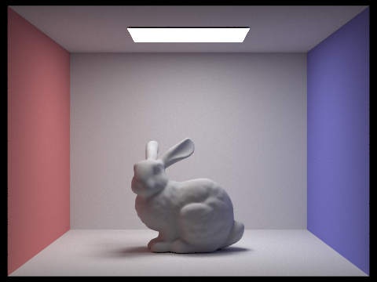 |
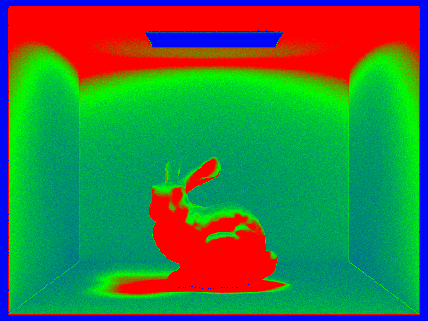 |
|
|
|
For both scenes above, we rendered with adaptive sampling configured at 2048 max samples per pixel, 1 light sample, and max ray depth 5.
In the sample-rate visualizations, high-frequency regions (object silhouettes, contact shadows, and soft-shadow boundaries) receive more samples, while smooth wall/floor regions converge early and use fewer samples.
This confirms that adaptive sampling is reallocating computation to high-variance pixels while still producing clean final renders.
Part 6: Extra Credit
This section contains all extra-credit content for this report. We implemented three extensions: (1) improved pixel samplers, (2) SAH-based BVH splitting, and rubric item (7): an alternate adaptive sampling heuristic. For each item below, we include approach details, implementation notes, representative screenshots, and timing data.
Extra Credit 1: Jittered and Low-Discrepancy Pixel Samplers
Approach and method. The baseline pixel sampler draws points uniformly at random in each pixel.
We added two alternatives to reduce variance and aliasing: a stratified jittered sampler and a Halton low-discrepancy sampler.
The jittered sampler subdivides the pixel into a $4\times4$ grid and jitters one sample within each cell.
The Halton sampler uses radical inverse sequences in bases 2 and 3 to produce a more even sample pattern over time.
Both methods are integrated behind a runtime mode switch so we can run fair A/B tests on the same scene/camera/sample budget.
Implementation details. We added JitteredGridSampler2D and HaltonSampler2D, kept the original
UniformGridSampler2D, and selected the mode at runtime with PT_SAMPLER2D_MODE
(uniform, jittered, halton). All three runs below use
CBspheres_lambertian.dae, 480x360, 64 spp, 4 light samples, max depth 5.
|
|
|
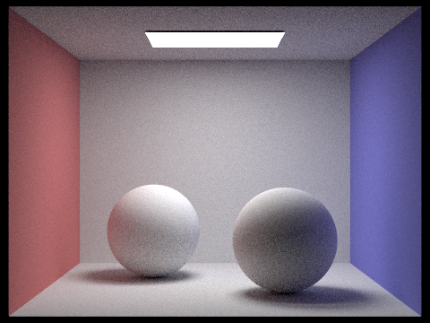 |
|
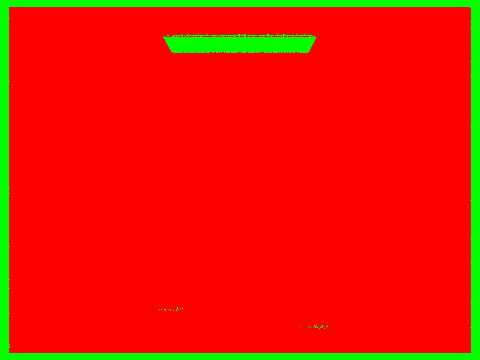 |
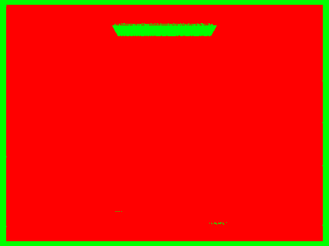 |
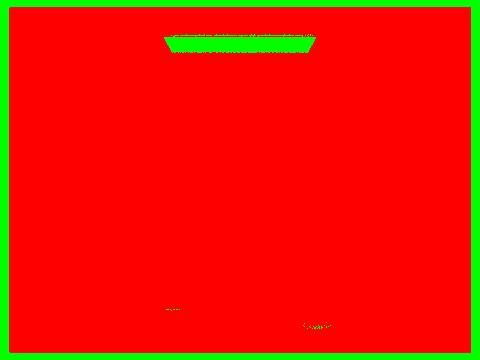 |
| Sampler Mode | Render Time (s) | Rays/sec (M) | Speedup vs Uniform |
|---|---|---|---|
| Uniform | 24.3818 | 4.5679 | 1.00x |
| Jittered | 24.1180 | 4.5462 | 1.01x |
| Halton | 23.8218 | 4.7330 | 1.02x |
Discussion. At equal sample budgets, jittered and Halton produce more stable edge transitions than purely uniform random sampling, especially around geometric boundaries and smooth shading gradients. Runtime cost is nearly unchanged, and Halton is marginally faster in this specific experiment.
Extra Credit 2: Surface Area Heuristic (SAH) for BVH Splitting
Approach and method. The baseline BVH split chooses the longest axis and splits at the centroid midpoint.
We implemented a binned SAH strategy that evaluates candidate splits across all three axes and chooses the split minimizing
expected traversal/intersection cost. We used 8 bins per axis and computed per-side primitive counts and bounding boxes
to evaluate the SAH objective.
Implementation details. SAH is enabled with PT_BVH_SPLIT_MODE=sah.
A robust fallback to midpoint splitting is kept for degenerate cases (empty partitions or near-zero extents),
so construction remains stable on all scenes.
The benchmark below uses CBdragon.dae (100,012 primitives), 480x360, 32 spp, 4 light samples, max depth 5.
|
|
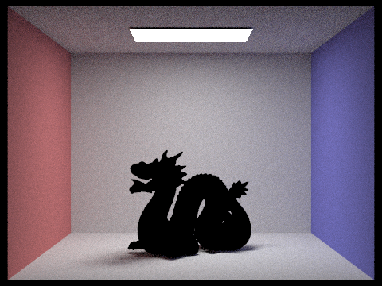 |
| BVH Split Heuristic | Build Time (s) | Render Time (s) | Total (s) | Avg Isects/Ray | Render Speedup |
|---|---|---|---|---|---|
| Centroid Midpoint | 0.0362 | 47.1098 | 47.1460 | 11.149703 | 1.00x |
| SAH (8-bin) | 0.1157 | 12.8144 | 12.9301 | 6.319625 | 3.68x |
Discussion. SAH construction is around 3.2x slower than centroid construction on this scene, but BVH build remains a small fraction of total runtime. The higher-quality split decisions reduce average intersections per ray from 11.15 to 6.32 and improve render time by 3.68x. In practice, this tradeoff is strongly favorable for complex scenes.
Extra Credit 7: Alternate Adaptive Sampling Heuristic
Approach and method. The original stopping test uses a single luminance confidence interval criterion.
We added a second mode that checks per-channel confidence intervals (R/G/B independently) with a luminance floor guard.
The goal is to avoid premature stopping in low-luminance but chromatically noisy regions.
Implementation details. This mode is enabled with PT_ADAPTIVE_MODE=channel and
PT_ADAPTIVE_LUMINANCE_FLOOR=0.001. Baseline remains available as PT_ADAPTIVE_MODE=baseline.
Comparison below uses CBbunny.dae, 480x360, 256 max spp, 1 light sample, max depth 5,
with tolerance controlled by -a 32 0.05.
|
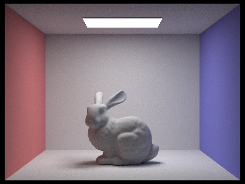 |
|
|
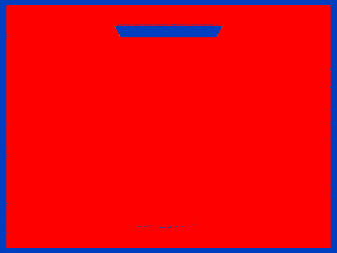 |
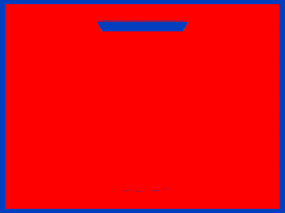 |
| Adaptive Heuristic | Render Time (s) | BVH Rays Traced | Rays/sec (M) | Speedup vs Baseline |
|---|---|---|---|---|
| Baseline (Luminance CI) | 125.2311 | 209,337,282 | 1.6716 | 1.00x |
| Channel Variance + Floor | 126.2480 | 209,240,034 | 1.6574 | 0.99x |
Discussion. Runtime remained nearly identical for these settings, so this change should be viewed as a quality-allocation heuristic rather than a speed optimization. The channel-aware criterion redistributes samples more conservatively in colored/high-frequency regions, which is visible in the sample-rate maps. This mode is most useful when chromatic noise is more objectionable than small runtime changes.
Note. All Part 6 metrics were produced from logged command-line runs with fixed scene and render parameters.
Logs are stored under docs/images/part6/logs.
Collaboration Reflection
We collaborated by splitting up the sections, and debugging together on parts. We both focused together on the core rendering
logic (intersections, lighting recursion, sampling decisions). Kevin focused on setting up experiments, runtime/quality
comparisons, and helped to set up the report, while Yoko finished up the remaining tasks and helped with the reivew.
This workflow worked well, and helped us catch subtle bugs in depth handling and sampling configuration.
Our biggest takeaway
was that for a project with many long renders, communication and delegation are key. Also, we learned that you need to be
careful about what does and doesn't count as an intesection, and which lighting terms contribute to each bounce.
We independently wrote the conceptual explainations in this report and the first code attempts, and we used AI tools during this
project to support our and learning and workflows. We used these following tools:
Copilot: debugging support, write-up styling, algorithm clarification, and render-queue scripting
Gemini: conceptual clarifications (e.g., understanding Monte Carlo sampling)